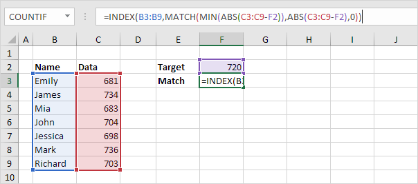
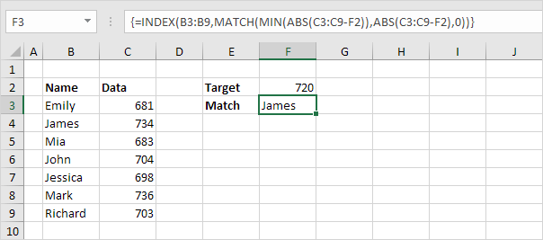

Gunakan INDEX dan MATCH di Excel dan buat atasan Anda terkesan. Alih-alih menggunakan VLOOKUP, gunakan INDEX dan MATCH. Untuk melakukan pencarian lanjutan, Anda memerlukan INDEX dan MATCH.
Match (kecocokan)
Fungsi MATCH mengembalikan posisi nilai dalam rentang tertentu. Misalnya, fungsi MATCH di bawah ini mencari nilai 53 dalam rentang B3:B9.

Penjelasan: 53 (argumen pertama) ditemukan pada posisi 5 dalam rentang B3:B9 (argumen kedua). Dalam contoh ini, kami menggunakan fungsi MATCH untuk mengembalikan kecocokan persis sehingga kami menetapkan argumen ketiga ke 0.
Indeks
Fungsi INDEX di bawah ini mengembalikan nilai tertentu dalam rentang satu dimensi.

Penjelasan: fungsi INDEX mengembalikan nilai ke-5 (argumen kedua) dalam rentang E3:E9 (argumen pertama).
Index and Match
Ganti nilai 5 pada fungsi INDEX (lihat contoh sebelumnya) dengan fungsi MATCH (lihat contoh pertama) untuk mencari gaji ID 53.
Penjelasan: fungsi MATCH mengembalikan posisi 5. Fungsi INDEX membutuhkan posisi 5. Ini adalah kombinasi yang sempurna. Jika Anda suka, Anda juga dapat menggunakan fungsi VLOOKUP . Terserah kamu. Namun, Anda memerlukan INDEX dan MATCH untuk melakukan pencarian lanjutan, seperti yang akan kita lihat selanjutnya.
Pencarian dua arah (Two-way Lookup)
Fungsi INDEX juga dapat mengembalikan nilai tertentu dalam rentang dua dimensi. Misalnya, gunakan INDEX dan MATCH di Excel untuk melakukan pencarian dua arah.
Pencarian kasus sensitif (Case-sensitive Lookup)
Secara default, fungsi VLOOKUP melakukan pencarian case-insensitive. Namun, Anda dapat menggunakan INDEX, MATCH, dan EXACT di Excel untuk melakukan Case-sensitive Lookup.

Catatan: rumus benar mencari gaji MIA Reed, bukan Mia Clark.
Pencarian Kiri (Left Lookup)
Fungsi VLOOKUP hanya melihat ke kanan. Jangan khawatir, Anda dapat menggunakan INDEX dan MATCH di Excel untuk melakukan pencarian kiri.

Catatan: ketika kita menyeret rumus ini ke bawah, referensi absolut ($E$4:$E$7 dan $G$4:$G$7) tetap sama, sedangkan referensi relatif (A2) berubah menjadi A3, A4, A5, dll.
Pencarian dua kolom (Two-column Lookup)
Apakah Anda ingin mencari nilai berdasarkan beberapa kriteria? Gunakan INDEX dan MATCH di Excel untuk melakukan pencarian dua kolom.

Catatan: rumus array di atas mencari gaji James Clark, bukan James Smith, bukan James Anderson.
Closest Match (kecocokan terdekat)
Untuk menemukan Closest Match dengan nilai target di kolom data, gunakan INDEX, MATCH, ABS, dan MIN di Excel.

Untuk menemukan kecocokan terdekat dengan nilai target di kolom data, gunakan INDEX, MATCH, ABS, dan MIN di Excel. Gunakan fungsi VLOOKUP di Excel untuk menemukan kecocokan perkiraan.
1. Fungsi ABS di Excel mengembalikan nilai absolut dari sebuah angka.
Penjelasan: C3-F2 sama dengan -39. Fungsi ABS menghilangkan tanda minus (-) dari angka negatif, menjadikannya positif. Fungsi ABS tidak berpengaruh pada angka 0 (nol) atau positif.
2. Untuk menghitung selisih antara nilai target dan nilai pada kolom data, ganti C3 dengan C3:C9.

Penjelasan: rentang (konstanta array) yang dibuat oleh fungsi ABS disimpan dalam memori Excel, bukan dalam rentang. Konstanta array terlihat sebagai berikut:
{39;14;37;16;22;16;17}
3. Untuk menemukan kecocokan terdekat, tambahkan fungsi MIN dan selesaikan dengan menekan Ctrl+Shift+Enter.
Catatan: bilah rumus menunjukkan bahwa ini adalah rumus larik dengan mengapitnya dalam kurung kurawal {}. Jangan mengetik ini sendiri. Konstanta array digunakan sebagai argumen untuk fungsi MIN, memberikan hasil 14.
4. Yang kita butuhkan hanyalah sebuah fungsi yang menemukan posisi nilai 14 dalam konstanta array. MATCH berfungsi untuk menyelamatkan! Akhiri dengan menekan Ctrl+Shift+Enter.

Penjelasan: 14 (argumen pertama) ditemukan pada posisi 2 dalam konstanta array (argumen kedua). Dalam contoh ini, kami menggunakan fungsi MATCH untuk mengembalikan kecocokan persis sehingga kami menetapkan argumen ketiga ke 0.
5. Gunakan fungsi INDEX (dua argumen) untuk mengembalikan nilai tertentu dalam rentang satu dimensi. Dalam contoh ini, nama pada posisi 2 (argumen kedua) dalam rentang B3:B9 (argumen pertama).

6. Akhiri dengan menekan Ctrl+Shift+Enter.
